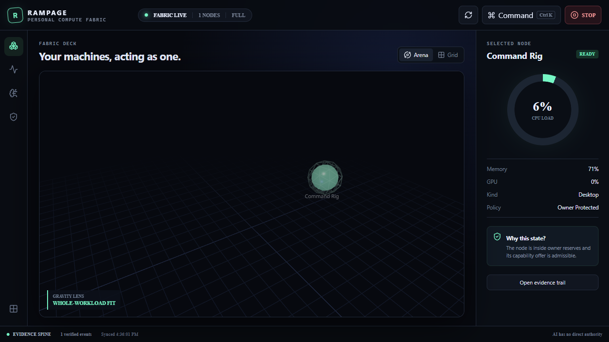
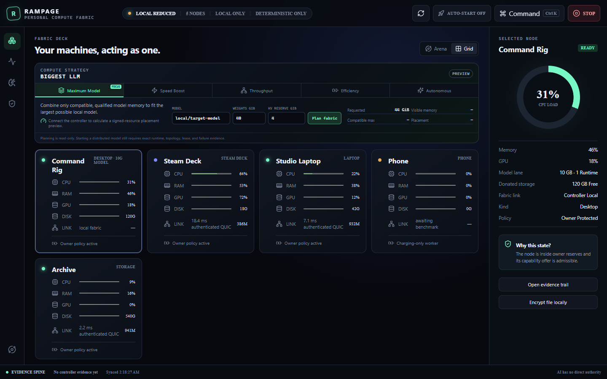

Pool useful work
Move complete jobs to the right machine. Split independent evaluation, search, preprocessing, and rendering into atomic shard sets.
FABRIC LIVE · OWNER CONTROLLED
Rampage turns the computers you already own into a private compute fabric—then gives it an autonomous intelligence layer that can evolve plans without ever inheriting unchecked authority.
Unsigned Windows x64 release candidate · SHA-256 hashes published
THE FABRIC ARENA
A spatial live view for intuition. A keyboard and screen-reader-friendly Ops Grid for precision. Both are projections of the same evidence-backed state.

THE SHIFT
Move complete jobs to the right machine. Split independent evaluation, search, preprocessing, and rendering into atomic shard sets.
CPU, VRAM, RAM, storage, runtime, thermal, and power capacity become scoped capabilities—not permanent ambient permission.
Donated drives become encrypted content-addressed capacity with signed transfer leases, bounded payloads, and verified digests.
Every accepted job returns a signed result. Every transition lands in a recoverable, hash-chained evidence ledger.
DESIGN GRAPH
Rampage has a narrow waist: the signed capability lease. Everything smart can improve above it. Everything powerful can diversify below it. Neither side can wish policy away.
COMPUTE STRATEGY
The new strategy plane previews exactly how compatible memory and measured links should be used—without turning a placement guess into execution authority.
Combine qualified compatible model memory to fit an LLM no single machine can hold.
Use tensor peers only when topology predicts faster tokens. Otherwise, stay on the fastest node.
Place whole-model replicas for simultaneous users, agents, and batched work.
Choose the smallest qualified fit and preserve energy, thermals, and responsiveness.
Adapt from signed evidence while the deterministic Governor retains every gate.

The planner, contracts, CLI, SDK, and desktop toggle are implemented. Cross-host model launch remains fenced until a backend passes the published isolation, failure, and benchmark campaign.
ONEPOOL
A phone is not a pretend data-center GPU. It can still preprocess, validate, score, cache, relay, or run a small model when foreground, thermal, battery, and restart-tolerance policy all agree.
RECURSIVE INTELLIGENCE
Rampage can analyze its own evidence, propose mutations, challenge them, replay them, and earn bounded promotions. The loop is durable. The boundary is deterministic.
NOT VAPORWARE
The Governor signs only the requested minimum resources after independently checking the selected offer.
A complete set is planned against one reservation book and admitted all-or-nothing, with explicit success thresholds.
Signed endpoint identity, pinned peers, and narrow QUIC routes replace dependency on a third-party tailnet.
Signed transfer leases bind digest, direction, node, size, class, expiry, and fencing epoch.
Workers sign the job result and artifact references; controller restart reconstructs durable status.
The local kill latch remains usable when AI, network, controller, or remote peers are unavailable.
RAMPAGE 0.2
Make them act as one. Make every unit of authority prove where it came from.
Trusted-circle release · public source inspection · proprietary license · unsigned binaries